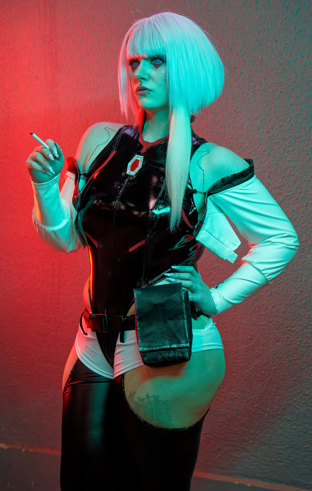
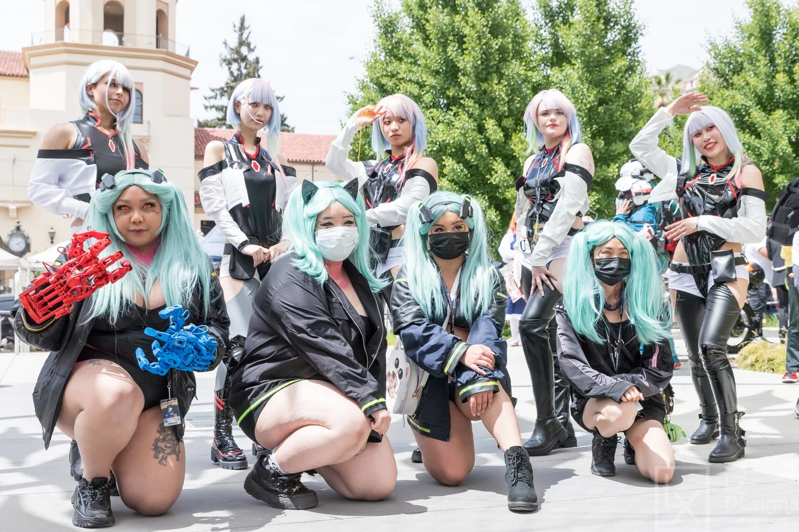
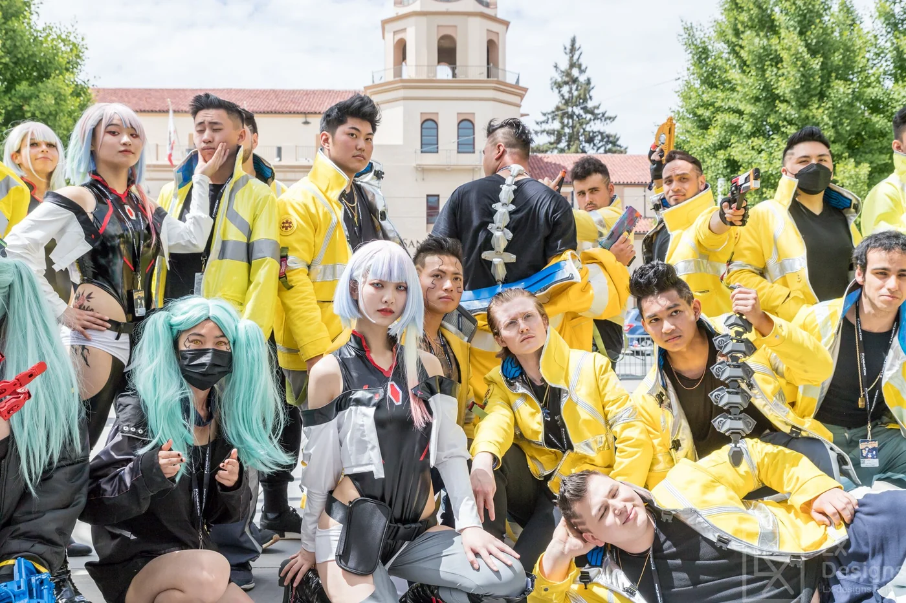
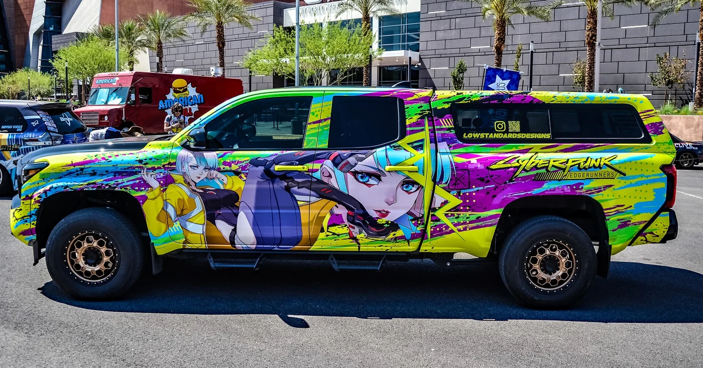

Cyberpunk: Edgerunners 2 Review: Night City Burns Again
Last updated: 30 October 2026
Four years after David Martinez ran into the light, Night City is back — and it has not calmed down at all. Cyberpunk: Edgerunners 2 arrived on Netflix on 20 October 2026, all ten episodes at once, and within ten days it had climbed to the top of AniList's trending chart with more than 109,000 members and an average score of 84.
That is a remarkable number for a sequel that deliberately throws away its own protagonist. So what is it, who is in it, and does it hold up? Here is the full picture.
The most important thing to know: it is not a season 2
If you finished the 2022 series and are waiting to find out what happened next, this is not that show.
CD PROJEKT RED and Netflix have been explicit about it: Edgerunners 2 is a standalone anthology entry, not a continuation. David's story ended. The new series follows an entirely different crew with their own problems, and it is written so that someone who has never seen the first series can start here.
What carries over is the setting, the studio, and the attitude. Night City is the same city — corporate towers, gang territory, cheap chrome, expensive consequences. Everything else is new.
The new crew
Four characters anchor the story, and the show is built around how their paths cross.
Weak "King" Kingsley is a washed-up veteran edgerunner now living without chrome, searching for a sense of purpose in a world that has moved past him. The premise is quietly brutal: in Night City, a mercenary who cannot afford implants is not just old, he is obsolete.
D is a Snake Nation netrunner on a revenge arc, hunting whoever wiped out his clan. His trail leads him toward corporate secrets he was never supposed to find — which is how a personal vendetta turns into something much bigger.
Roman Carax is a young cinephile who documents Night City with a camcorder in a culture that has traded cinema for neurodance. He is the closest thing the series has to an audience surrogate, and the show's own tagline — "when the world is blinded by spectacle, what extremes do you have to go to make your story matter?" — clearly belongs to him.
Talia Yang grew up in the corporate towers but was hardened by trials inside the Maelstrom gang. Fiercely independent, deeply attached to her crew's chrome, and the character most likely to complicate everyone else's plan.

The people who made it
The staff list is the strongest argument that this is not a quick cash-in.
Kai Ikarashi directs, and it is his directorial debut. That sounds like a risk until you look at what he did on the first series: storyboard artist, animation director, animator, prop designer. He has been inside this show's visual language from the beginning, and the promotion is the kind of thing animation fans usually ask for and rarely get.
Bartosz Sztybor returns as showrunner, story writer and producer. He is a Hugo Award winner and one of the people who built the original's story. Masahiko Otsuka is back on scripts, and Ichigo Kanno — an animation director and key animator on the first series — takes over as lead character designer.
The one name that is new in a very visible way is composer Tsuneo Imahori. Music carried an enormous amount of the first series' reputation, so this was always going to be the most scrutinised change.
The tone has changed on purpose
CD PROJEKT RED has described the shift bluntly. If the 2022 series played like a Michael Bay film, this one is aiming closer to Martin Scorsese.
That is a real difference and it explains most of the creative decisions. The first series was a rocket: a kid with nothing straps on military-grade chrome and burns out in ten episodes. It was loud, fast and operatic, and it worked because it committed completely.
Edgerunners 2 sounds like it is trading that for something slower and more character-driven — a heist that goes wrong, a revenge plot that keeps expanding, and four people whose damage is psychological rather than cybernetic. Whether that is better is a matter of taste. It is definitely not the same show twice.

The music
The opening theme is "10:15 Saturday Night" by The Cure. That is a genuinely surprising needle drop for a cyberpunk anime, and it says a lot about the tone the show is going for — cold, post-punk melancholy rather than aggressive synth metal.
The ending theme is "Watson" by Petite Meller. Watson is also the district of Night City where a lot of the series takes place, which is a nice touch if you know the map.
What it is actually about
Strip away the chrome and the gunfights, and the throughline CD PROJEKT RED keeps describing is this: family, obsession, legacy, and how your lens reflects the stories of the people around you.
That last phrase is doing real work. With Roman as a filmmaker and D as a man chasing a ghost, the series seems to be asking what it means to document a city that is designed to consume the people in it. The first series asked whether a nobody could matter. This one appears to be asking who gets to decide that a story was worth telling.
There is also a quieter theme that runs through all of Cyberpunk: the chrome. Weak is defined by not having it. Talia is defined by being attached to it. D's enemies are defined by what they can afford. In this universe, your implants are your class.
The game tie-in
On the same day the anime premiered, CD PROJEKT RED announced the Edgerunners 2 Update — also called Update 2.5 — for Cyberpunk 2077. It released on 22 October 2026 for PC, PlayStation 5 and Xbox Series X|S, with a Nintendo Switch 2 version following shortly after.
The update is free and includes content inspired by the anime alongside other new items and features. If you play the game, it is the smoothest possible way to stay in the world after the credits roll.

How it compares to the 2022 original
The original Edgerunners is one of the rare game adaptations that stands entirely on its own — a tight ten-episode tragedy that people still recommend without caveats. It also set a very high bar, and the sequel's decision not to try to clear it the same way is smart.
What you get instead is an anthology: same city, same rules, different story. That structure has advantages. It means no character is safe, no backstory is assumed, and the writers are not obliged to keep anyone alive for a sequel. It also means the emotional investment has to be rebuilt from scratch — which is the main risk.

The early audience numbers suggest the bet is landing. Being the most-trending anime on AniList on 29 October, a week and a half after release, is not the profile of a show people are bouncing off.
Who should watch it
Watch it if you liked the first series and want more of Night City without a rehash; if you like heist stories with a revenge spine; or if you are interested in what Studio TRIGGER looks like under a new director with a deliberately restrained brief.
Skip it if you specifically want David, Lucy and the 2022 crew — they are not here. And if you bounced off the original's bleakness, this one is described as even more grounded, which usually means even less comfort.
Where to watch
All ten episodes are streaming exclusively on Netflix, released together rather than weekly. Both Edgerunners series are on the same platform, so you can watch the original first if you want the full context — though it is not required.
Verdict
Cyberpunk: Edgerunners 2 does the harder thing. It could have brought back a beloved cast and coasted. Instead it built a new crew, handed the director's chair to someone who earned it inside the production, changed the composer, changed the tone, and asked the audience to start over.
Not every sequel gets away with that. This one appears to, and the numbers back it up: 109,000 AniList members, a score of 84, and the top of the trending chart within ten days. For a ten-episode anime based on a video game, in a season crowded with Black Clover, The Apothecary Diaries and JoJo's Steel Ball Run, that is a strong result.
Score: 8.5/10. A colder, more patient Night City — and it suits the place.